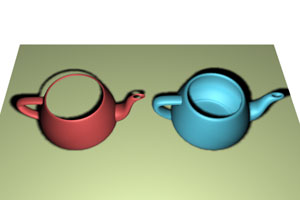

| Модификатор |
Действие |
Пример |
| Bend | Сгиб | |
| Twist | Скручивание | |
| Stretch | Растягивание, сплющивание объекта | |
| Push | Надувание объекта | |
| Ripple | Рябь, круги по поверхности объекта | |
| Skew | Скос объекта | |
| Spherify | Превращение объекта в сферу | |
| Lattice | Превращение объекта в решетку | |
| Displace | Смещение вершин на объекте с помощью карты | |
| Substitute | Замена одного объекта другим, например, при расстановке мебели в интерьере | |
| Shell | Оболочка, придание толщины открытой поверхности |  |
| Taper | Стесывание, заострение | |
| Noise | Зашумление, случайное искажение | |
| Squeeze | Сжатие | |
| Relax | Разглаживание поверхности объекта | |
| Wave | Волны по поверхности объекта | |
| Slice | Разрезание объекта, отрезание его части плоскостью |  |
| Affect Region | Смещение региона | |
| Mirror | Зеркальное отражение объекта | |
| Preserve | Сохранение длин ребер | |
| XForm | Запись преобразований в стек | Включив уровень подобъектов можно перемещать, поворачивать и масштабировать объект. При выключении действия модификатора объект возвращается в исходное состояние
|